| [ Team LiB ] |
|
M15.4 Pumping and Piping SystemsConsider the pumping and piping system shown in Figure M15-6. The pump is taking suction on the surge tank and pumping a liquid through a chemical process system (perhaps a heat exchanger and a reactor). Figure M15-6. Process flowsheet for a pumping and piping system.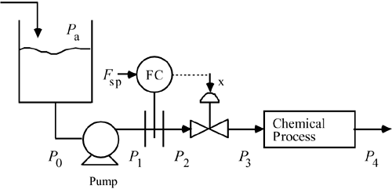 A typical pump head curve is shown in Figure M15-7. The pump head is a direct measure of the pressure increase between the suction and discharge of the pump that can be obtained as a function of the flow rate through the pump. 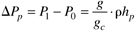 Figure M15-7. Pump head curve for a typical centrifugal pump [see Figure 6-7 from Perry and Green (1984)].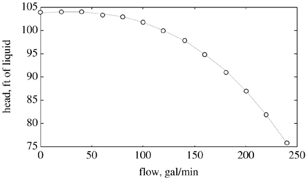 where hp is the pump head in feet. The process will operate at the intersection of the pump head and system head curves, as shown in the following discussion. Assume that the pressures Pa and P4 are known. Pa is the ambient (or atmospheric) pressure and P4 is the pressure at some known point downstream. If the height of liquid in the tank is known, then P0 can be calculated for any given flow rate as 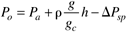 where h is the height of fluid between the tank level and the suction side of the pump and DPsp is the pressure loss due to friction in the suction piping. The pressure drop is generally proportional to the square of the volumetric flow rate. The pump discharge pressure, P1, can be determined either using P0 and the pump head curve as a function of flow rate, 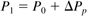 or using the pressure drop through the discharge piping system and the final pressure, P4. Using the second method, we can basically determine the system head as a combination of the pressure drop through the chemical process (DPcp) and across the orifice plate (DPop). 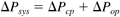 The pump discharge pressure can be found as 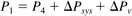 Obviously, the problem solution is where P1 from Equation (M15.20) is equal to P1 from Equation (M15.22). Numerical Example Consider the pump head curve shown in Figure M15-7. Assume that the maximum flow rate is 240 gpm. The pump head at this flow rate is 76 feet of water. Now, let's make some assumptions about the other pressures in the system. First, we know that P1 calculated from Equation (M15.20) is equal to P1 from Equation (M15.22), or 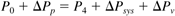 For this particular example, assume that P4 = P0, so 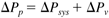 At the maximum flow rate of 240 gpm, assume that the system head is 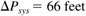 so the valve pressure drop must be 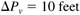 We can easily determine the system head at any other flow rate (F2) as 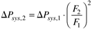 That is, 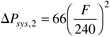. The system head is compared with the pump head curve in Figure M15-8. Notice that in practice, the pressure drop can be predicted by knowing the pipe diameter, the number of elbows and fitting, the pipe roughness, and so forth, and by calculating an overall friction factor. The pressure drop is a function of the square of the flow rate, so we are assuming that the pressure drop has been calculated or measured at a particular flow rate and we simply use the ratio of the square of the flow rates to determine the pressure drop at any other flow rate. The difference between the pump head and the system head is the pressure drop across the valve. Figure M15-8. Pump head and system head curves.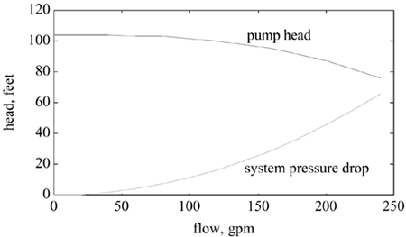 The relationship for flow through a valve is 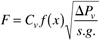 Now assuming that the valve is wide open at the maximum flow rate of 240 gpm (x = f(x) = 1) and the fluid is water, we can calculate the valve coefficient as 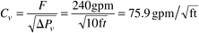 Notice that the unit of pressure drop that we are using is feet of water. Then, for a given flow rate and valve pressure drop, we can calculate the fraction that the valve must be open. That is, 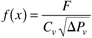 And for a linear valve, the fraction that the valve is open is 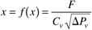 and for an equal-percentage valve, the fraction that the value is open is 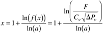 In each case, DPv = DPp - DPsys. These relationships are shown in Figure M15-9. Figure M15-9. Comparison of installed characteristics of control valves.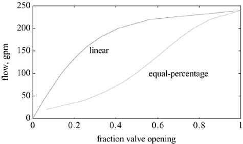 Notice that the linear valve has a more linear characteristic at low flow rates, while the equal-percentage valve has a more linear characteristic over a wider range of flow rates, and in the higher flow rates in particular. Notice also that the gain of the linear valve is high at low valve opening and low at high valve openings. The equal-percentage valve has a gain that is roughly the same at high and low valve openings and has a maximum gain that is roughly twice the minimum gain. The linear valve has a maximum gain that is roughly 10 times the minimum gain. If a control system using the linear valve was tuned at a high flow rate (valve gain low, controller gain high), the control system might go unstable when operated at low flow rates. This problem is less likely to occur with the equal-percentage valve. |
| [ Team LiB ] |
|